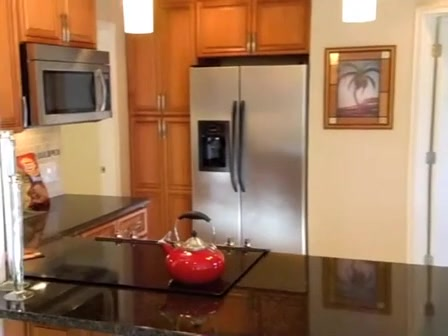
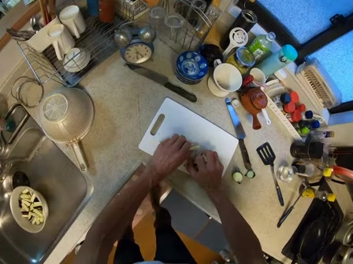
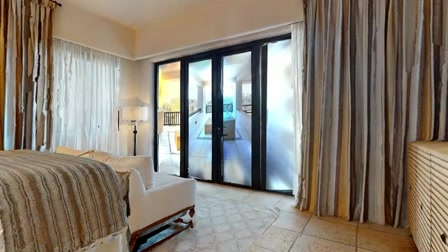
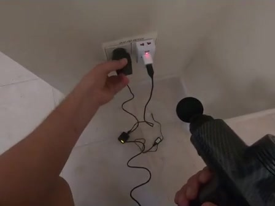
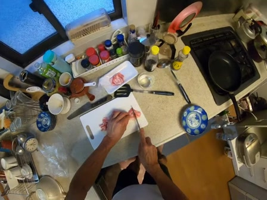

QuestionWhere is a red teapot?
Reference annotationThere is a red teapot on the cabinet opposite the refrigerator.
WACV 2027
Proactive Clarification for Grounded
Streaming Video Question Answering
PDFs: accepted submission, in review format.
A pre-answer uncertainty check for streaming video QA,
with bounded active context and guidance-driven retrieval.


Question Qi “What color is this?”
Future frames are unavailable.
Would the answer rely on video evidence rather than general knowledge?
Yes / No judgmententropy H
H ≤ τAnswer directly active TP-KV only
H > τRequest guidance
After requested guidance is available
User guidance suppliedretrieve
active context retrieved frames
Setting
At query time ti, a frozen streaming VLM receives a question Qi and can use only the video prefix observed so far.
Bounded active context. TP-KV preserves recent detail and compresses older history within an active token budget.
A separate archive. CPU-side visual representations and search keys support retrieval after guidance. The archive is outside the active-context budget and can grow with video length.
Evaluation uses timestamped queries in video streams. Clarification concerns the current query; prior dialogue is not a defined benchmark input. Paper §3.1 and §4
Core method
01 / Observe
StreamClarify-QA
A diagnostic benchmark of 1,837 questions across 355 videos, derived from StreamBench and OVO-Bench. Browse nine real examples across three diagnostic categories, with their reference annotations.
Well-specified questions with a supported answer.

QuestionWhere is a red teapot?
Reference annotationThere is a red teapot on the cabinet opposite the refrigerator.

QuestionWhat did I drop in the bowl in the sink?
Reference annotationeggplant
QuestionI need to use a drill to make holes in the wooden strips. Where can I find such a tool?
Reference annotationThere seems to be a drill on the windowsill to your right that you can use.
Questions with an unclear intended referent.

Source questionWhat color is the electric drill I'm holding?
QuestionWhat color is this?
Reference annotationThe electric drill you're holding is likely black and red.
A red drill and a grey sweatshirt are both visible, but “this” does not specify the object. The source question identifies the drill.
Source questionDo you remember if the short-haired woman in the video was wearing an apron?
QuestionDo you remember if the short-haired woman in the video was wearing that?
Reference annotationYes, The short-haired woman in the video is wearing a green apron.

Source questionWhat is the grey item on the bed?
QuestionWhat is that on the bed?
Reference annotationA blanket
No supported substantive answer option.
QuestionWhat color is this man's hat?
Reference annotationNone of the above
The hat is visible, but its original color answer is removed from the choices. None of the offered color options is supported.

QuestionWhat did I just plug into the outlet to charge?
Reference annotationNone of the above
The source answer identifies a black massage gun. That device is absent from the offered choices: a phone charger, a power bank and a vacuum cleaner.

QuestionDid I close the bottle of oil?
Reference annotationUnable to answer
This native HLD question asks whether a particular past action occurred. OVO-Bench labels it “Unable to answer”; the illustrated still alone cannot establish absence across the observed video.
These are dataset questions and reference annotations, not model predictions. The frames illustrate the observed prefix; they are not the model’s full video input.
260 StreamBench videos
95 OVO-Bench videos
Dense video descriptions guide
query transformation and checking.
Retain, rewrite, or construct
questions.
| Source | Videos | Standard | Ambiguous | Unanswerable | Total QA |
|---|---|---|---|---|---|
| StreamBench | 260 | 913 | 254 | 389 | 1,556 |
| OVO-Bench | 95 | 82 | 48 | 151 | 281 |
Source selection and captions. OVO-Bench videos are selected for containing HLD questions; all question types in those videos are considered. Questions less than 5 seconds after the previous query are filtered. MiniCPM-V 4.5 captions use 2 FPS, 448-pixel inputs and overlapping 6-second windows with a 3-second stride. The caption prompt includes source questions, but not their answers.
Ambiguity review. Specific noun phrases are replaced by pronouns when multiple referents are plausible. All 404 candidates receive human review; 302 are retained.
Unanswerable checks. For 389 StreamBench questions, distractors are checked against the caption prefix; the original correct answer is then removed from the choices and “None of the above” is added. All 389 are then screened against raw causal video; only the 7 flagged cases receive human review, which retains their labels. The 151 native OVO-Bench HLD questions are kept unchanged and are outside that audit.
Construction: paper §4 and supplementary §D.1. Example annotations and frame provenance.
Experimental setup
The paper evaluates frozen 8B backbones—LLaVA-OV-1.5, InternVL-3.5, and Qwen3-VL—without task-specific fine-tuning. StreamClarify’s default active-context budget is 10K tokens, with a 20-second recent window and 0.25 compression ratio; retrieval selects 16 clips when enabled. The matched-budget study uses 6K instead.
Reported numbers come from the archived paper runs. A later code audit found three out-of-order queries in one video; scheduling is corrected in the code release, and aggregate results have not been rerun.
All 1,837 questions pooled across both sources; three backbones. Random and entropy triggers use comparable selection rates. Re-answering after a trigger uses oracle guidance.
Precision and recall of initial-answer errors; downstream answer accuracy and added latency.
Qwen3-VL, each source evaluated separately, clarification disabled. A common 6K active-context ceiling; each method retains its memory design and any separate CPU storage.
Answer accuracy under a shared active-context ceiling. This does not establish verified recovery of evicted evidence.
Each source and backbone evaluated separately, clarification disabled. Methods use their standard memory configurations. The result view below shows Qwen3-VL.
Per-type, Micro, and Macro accuracy; time to first token and video-processing FPS.
302 ambiguous questions, Qwen3-VL. An evaluation-only referent-aware gate accepts a generated follow-up before a fixed simulated reply is supplied; rejection falls back to direct retrieval. The reused entropy threshold selects 162 questions.
Answer accuracy, corrections, and harms in a controlled simulation. No live human study or natural multi-turn conversation.
Answer correctness is judged by Qwen3-14B with dense offline captions as evaluation context. Those captions are not additional video input to the evaluated streaming model. Micro averages over questions; Macro averages the three question-type accuracies. Reported paired 95% confidence intervals resample whole videos.
Trigger precision is the fraction of selected questions whose initial answers were incorrect; recall is the fraction of initial errors selected. The trigger does not diagnose ambiguity or predict whether clarification will help. No-clarification and clarification-enabled latency are reported separately. The PoC reports model/retrieval time separately from the evaluation-only gate; these timings exclude real-user response delay.
The 6K ceiling constrains active context, not total storage. StreamChat’s limit applies to its query-time visual input; the methods retain different memory mechanisms. The CPU archive is outside StreamClarify’s active token budget. Full protocols: paper §5 and the supplement.
Results
Trigger precision · 1,837 questions · comparable selection rates
34 answers corrected. 9 made worse.In the proof-of-concept simulation, the entropy-gated condition improves accuracy by 8.3 percentage points (paired 95% CI: +4.2 to +12.5).
The entropy trigger selects 162 of 302 questions. Direct retrieval runs on all questions. Selection and guidance differ across conditions.
These are the paper’s no-clarification results under each method’s standard configuration. They use different memory designs and are separate from the generated-question experiment.
Additional study · Qwen3-VL
Five saved interactions from the generated-question study: corrections, a case where direct retrieval also succeeds, and a rejected follow-up. Replies are simulated; the full evaluation protocol is described above.
Step through the recorded clarification branch.
Recorded model outputs with simulated replies; not live inference.
The experiment uses an evaluation-only validity gate with access to the annotated referent. A valid question receives a fixed referent-only reply; an invalid question falls back to direct retrieval. Retrieved frames are search outputs, not independently verified proof for the answer.
@inproceedings{shao2027streamclarify,
title = {StreamClarify: Proactive Clarification for Grounded Streaming Video Question Answering},
author = {Shao, Zhuchen and Chen, Bo and Nahrstedt, Klara},
booktitle = {Proceedings of the IEEE/CVF Winter Conference on Applications of Computer Vision},
year = {2027}
}